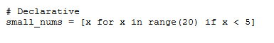

Programming languages
Table of contenets:
__________________________________________________________________________________________________
Declarative

this code is in python which describes the process of creating procedure we want in one step
there are three subsets from Declarative:
- Logic: Systems are designed by specifying logical rules and goals. Through logical inference, theruntime system attempts to accomplish the goals. Examples include: Prolog, ASP, Datalog, Florid, Logtalk.
- functional: Lambda calculus is a framework for the studyof computations with functions developed by Alonzo Church.It can be calledthe world's tiniest programming language.It provides computabledescription of what is.Anything that can be calculatedusing the lambda calculus is calculable.
- database